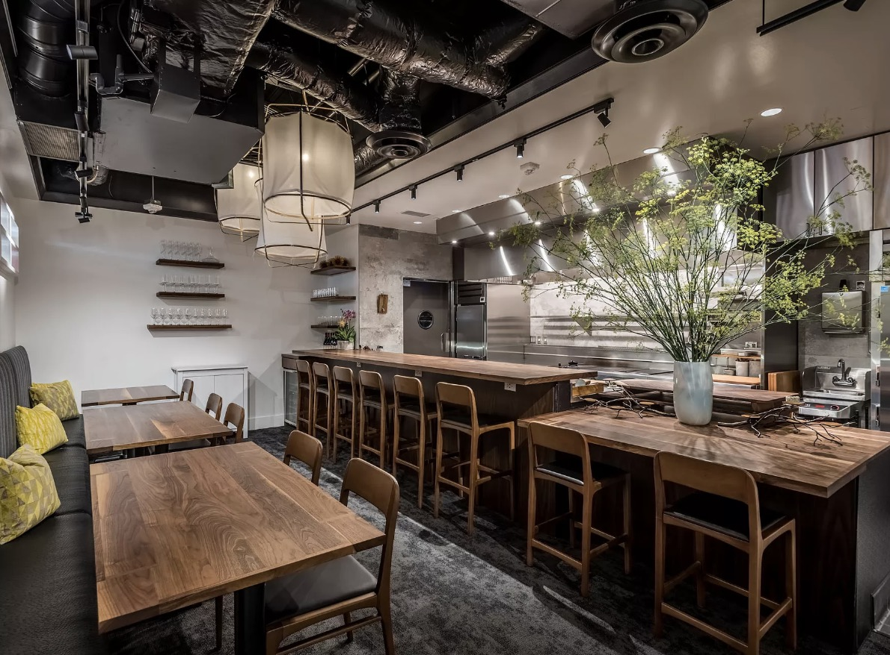
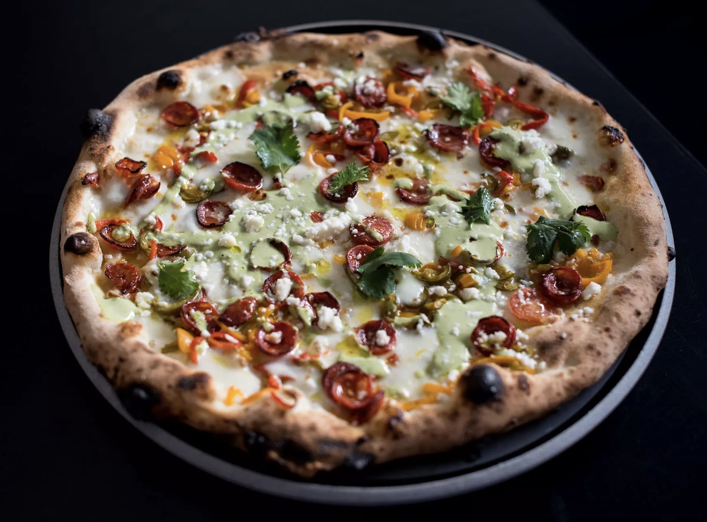
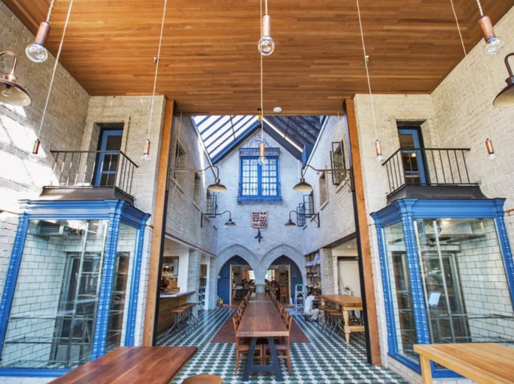
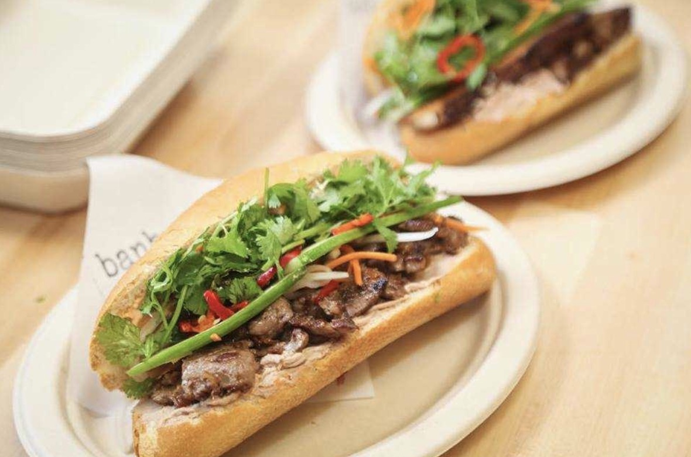
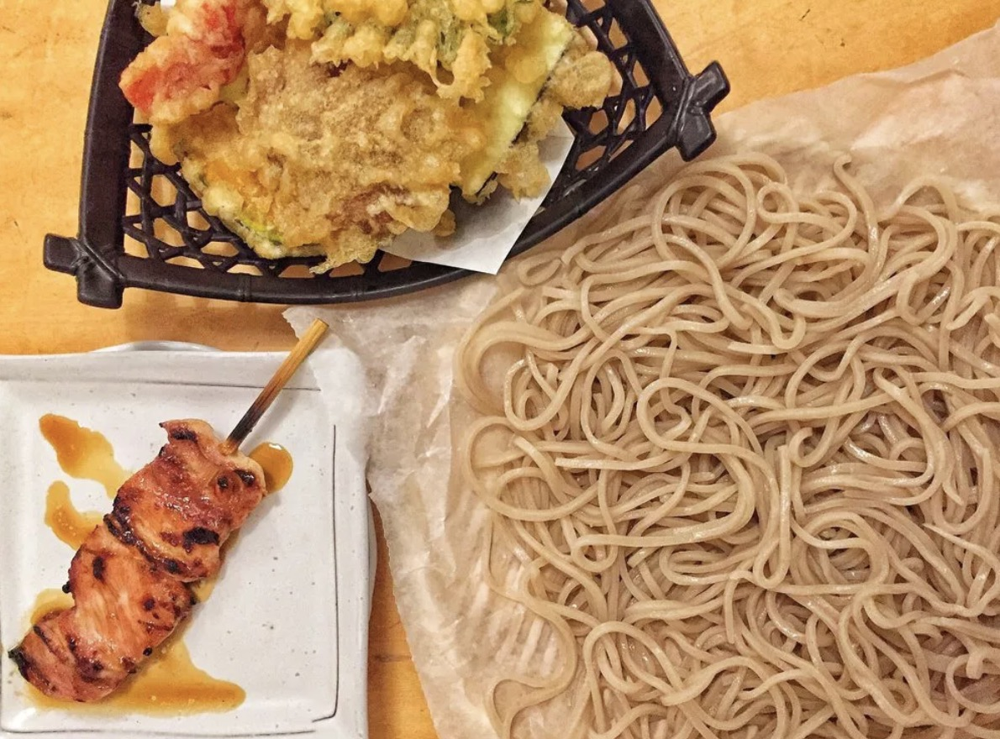

Food |
 Places to Visit |
 Map |
 Bibliography |
1. Dialogue
1315 3rd Street Promenade Suite K Santa Monica, CA 90401

This restaurant was created by Chicago chef Dave Beran of Alinea. The price is about $200, and comes with around 20 unique and different courses.
2. Scratch|Bar & Kitchen
16101 Ventura Blvd #255 Encino, CA 91436

This restuarant was created by Phillip Frankland and Margarita Lee. This restuarant is famous for having creative dishes in every course. This restuarant requires reservations.
3. Rose Cafe-Restaurant
220 Rose Ave Venice, CA 90291

This restuarant was created by Jason Neroni and is located in Venice. It has a large selection of food, varying from breakfast to dinner service.
4. Pizzana
11712 San Vicente Blvd Los Angeles, CA 90049

This restaurant sells Neapolitan pizza. They incorporate new technique and new flavor combinations to their pizzas to make them unique.
5. IXLB DimSum Eats
90028 Sunset Blvd Los Angeles, CA

This is a very special DimSum restaurant. There aren't any tables or chairs, you order everything you want from iPads. Then, you either take it to go or eat on window counters with an amazing view of Hollywood.
6. Magic Castle
90028 7001 Franklin Ave Los Angeles, CA

The only way to dine in this restaurant is to be invited by a member of the Academy of Magical Arts (Or you can just buy your way in). The food isn't the main purpose of dining here, it's the magic! Dinner is served at 6, 8, and 9:45 PM. You can also explore the clubhouse and see some magic before or after dinner.
7. Republique
90028 7001 Franklin Ave Los Angeles, CA

This restaurant was created by Walter and Margarita Manzke. They serve a breakfast to dinner menu with a French point of view. They also add American and Asian influences to their dishes.
8. Banh Oui
1552 N. Cahuenga Blvd

This restaurant was created by Casey Felton and Armen Piskoulian. The name means bread yes in Vietnamese and French. Banh Oui specializes in making Banh Mi that combines Vietnamese, French, and Japanese food together.
9. Otafuku
16525 S Western Ave Gardena, CA 90247

This restaurant feels like a noodle shop from the back of a Tokyo alley. The food is prepared nicely, it's reasonably priced, and it's always delicious. Recommended items are zaru soba and eel tempura.
10. Park's Barbeque
955 S Vermont Ave G Los Angeles, CA 90006

This Korean barbeque has the highest quality meat and banchan you could find in Los Angeles. The recommendations are wagyu beef and prime American short ribs with kimchi and fresh lettuce wraps.